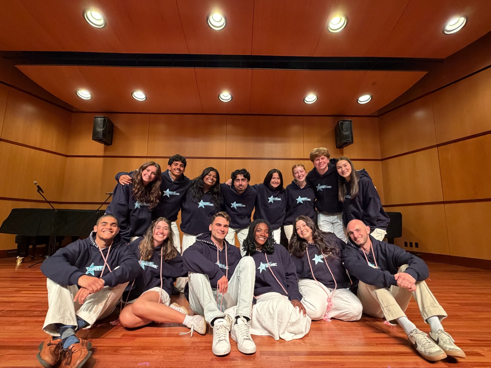
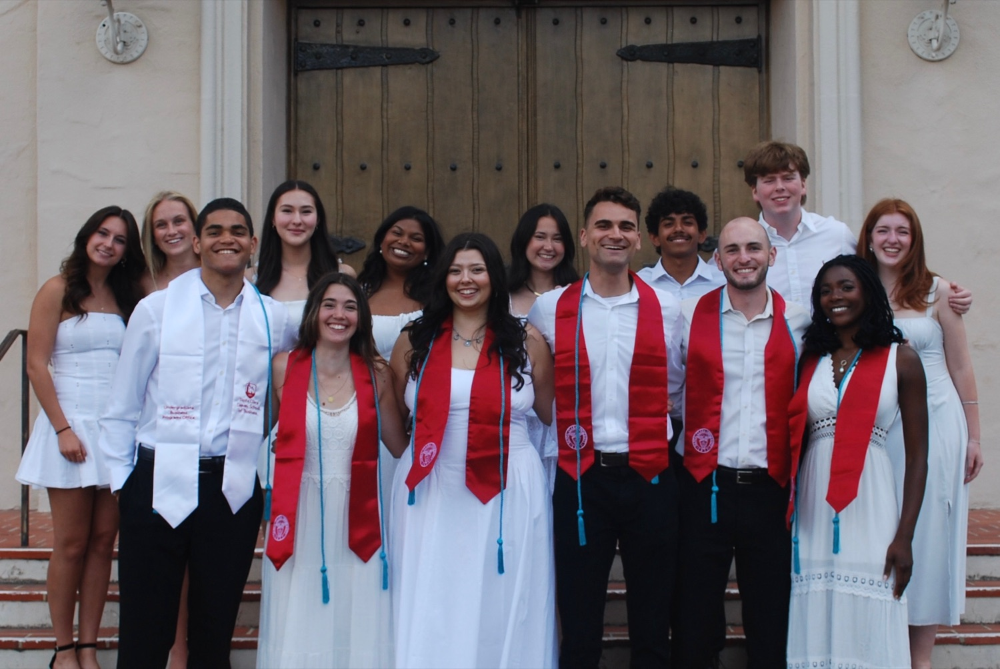
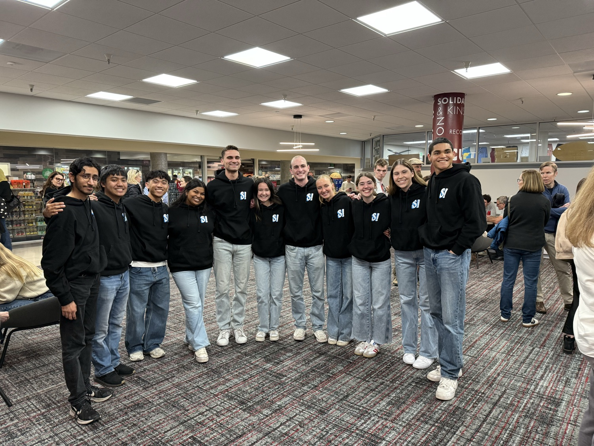
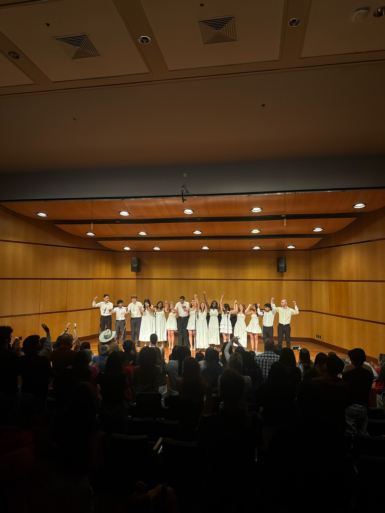

About Us
One big family that happens to sing.
Founded in 2007, Supertonic! is Santa Clara University's oldest contemporary all-gender a cappella group. For nearly 20 years, the Tonics have brought together students who love making music, performing, and — most importantly — making memories together.
From delicate harmonies and intricate arrangements to powerful solos and everything in between, we're always looking to transform a song into something unique. Our repertoire spans timeless classics to today's biggest pop hits.
Believe it or not, the most meaningful part of being a Tonic isn't the performances! From beach retreats to early-morning cold plunges, sunset hangouts, and spontaneous adventures, we're a close-knit family who push each other to be better singers and better people.
We've performed well beyond campus — at Music at Noon, Relay for Life, LoveJones, for University presidents, and even at the Golden Circle fundraiser alongside Train and Lionel Richie.
Est. 2007 · Santa Clara University
Nearly 20 years of harmony.
Meet the Group
The 2026–2027 Tonics
Click or tap any Tonic to read their full profile.
Our Spring Tradition
The Annual Showcase
Each spring, Supertonic! closes out the year with our Showcase — a beloved end-of-year tradition in SCU's Music Recital Hall, always free admission. It's where we perform everything we've learned across the season and spotlight the individual talents of every member through solos and duets.
The night is built around our graduating seniors: in Act II, the group performs each senior's hand-picked "Senior Song" — a send-off for the Tonics moving on. Our most recent was the 19th Annual Showcase, and we can't wait for the next.



Gallery
Life as a Tonic
Swipe, drag, or use the arrows.
Where it continues
Alumni · Class of 2026
The graduating Tonics who left the stage a little warmer. Once a Tonic, always a Tonic.
Get in touch
Book us. Audition. Say hi.
The fastest way to reach us is a DM on Instagram — we'd love to bring live a cappella to your event, or tell you about auditions.
DM @scsupertonicPrefer email? scsupertonic@gmail.com